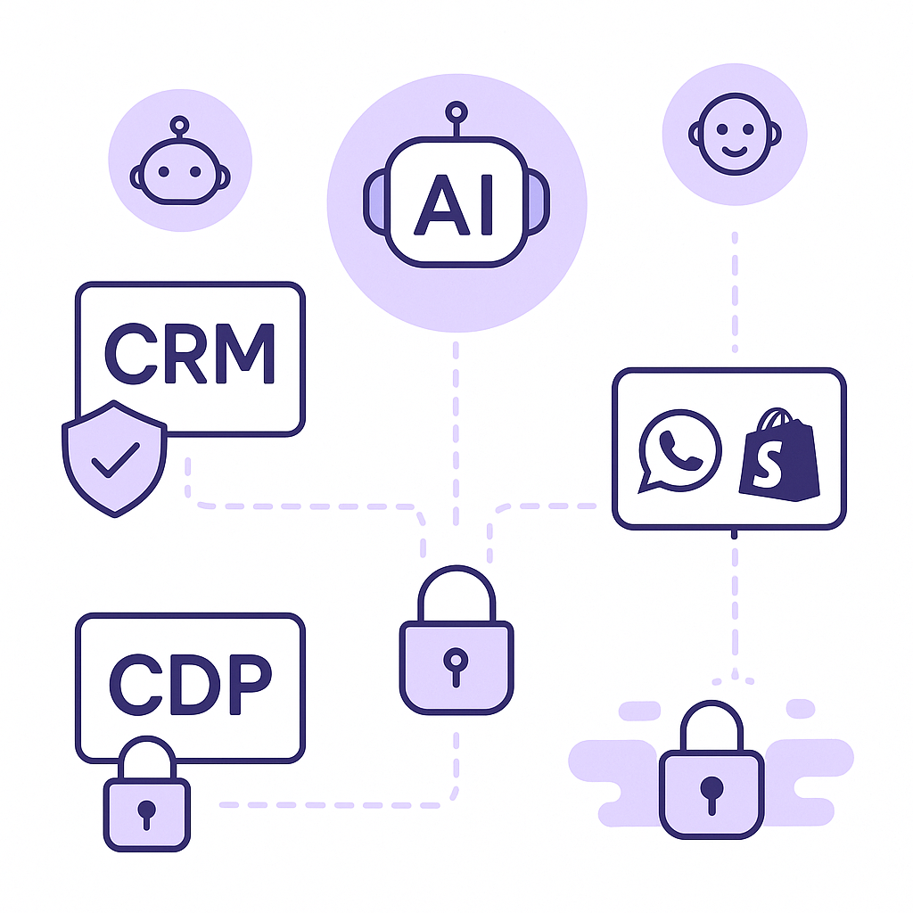
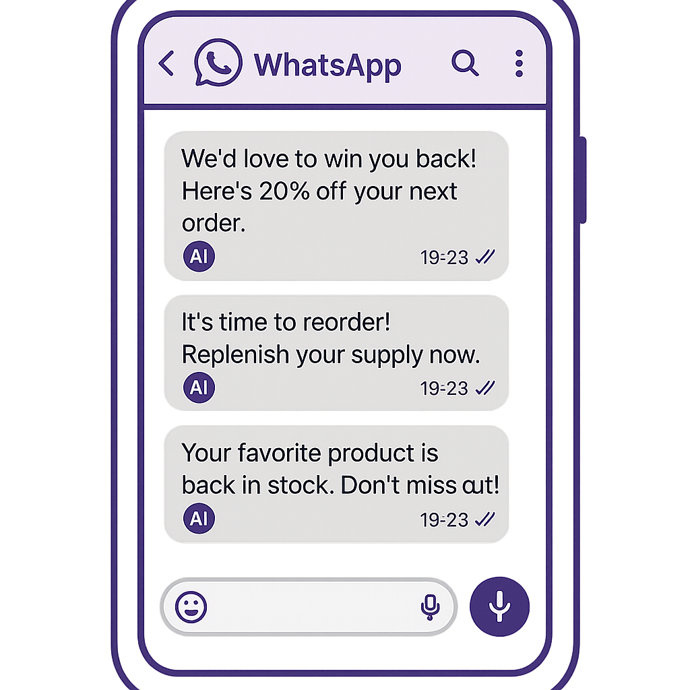
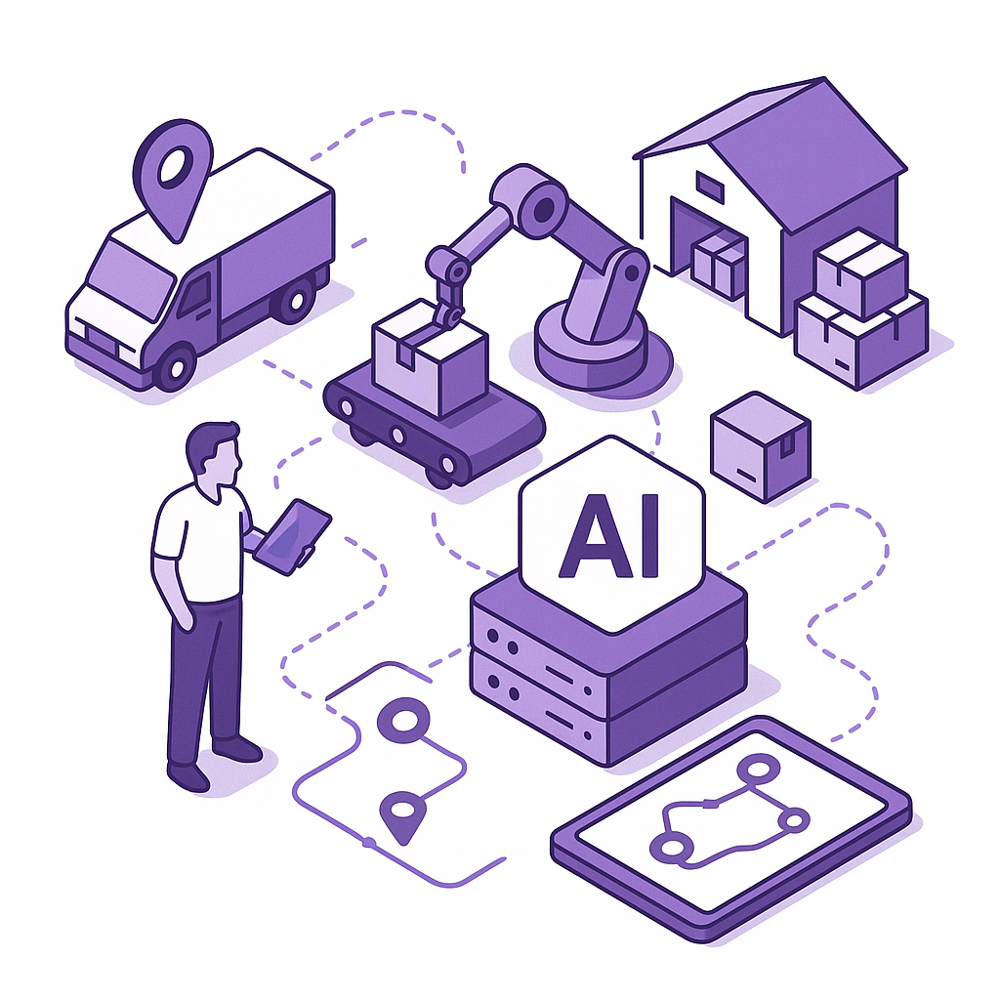

Publishing Recommendation
publishThe drafted posts are well-aligned with current trends and the brand's voice. They offer practical insights without unnecessary hype and maintain a clear, conversational tone.
Today's output effectively captures the nuances of current AI trends and their implications for supply chains, retail, and data analytics. The posts avoid exaggerated claims and provide actionable insights, staying true to Purands AI's emphasis on practical application and customer trust. Each piece is concise and aligns with our brand's voice, making them ready for publication.
LinkedIn Posts (10)
1. Retailers Struggle with AI Agents and Data Breaches ★ Purands solution · high priority
CTA: How are you addressing AI agent sprawl and data security in your business?

⬇ Download image{kind=link}
Image prompt · flat-vector
Caption: Balancing AI integration with data security in retail.
Alternative hooks
- Can your AI agents handle the heat? Retailers are struggling.
- AI agents: the hidden complexity in retail.
- Data breaches and AI: a ticking time bomb for retailers.
Research behind this post (sources, summaries & confidence)
Retailers Struggle with AI Agents and Data Breaches conf 0.70 · AI industry
AI agents' visibility and data security are critical for retention marketing, affecting trust and compliance. This is especially important for APAC markets where data privacy is a growing concern.
Sources & what I took from each
- Retailers are struggling with agentic sprawl.: Reports indicate that retailers are finding it difficult to manage the proliferation of AI agents, leading to increased complexity and potential security vulnerabilities. ↗ read source
- Data breaches involving AI agents pose significant risks.: There have been instances of data breaches where AI agents were exploited, highlighting the need for better security measures. ↗ read source
Original trend links
Risks / caveats
- Increased complexity with AI agents can lead to security vulnerabilities.
- Data breaches can undermine customer trust and lead to regulatory penalties.
2. Databricks Expands AI Capabilities ★ Purands solution · high priority
CTA: Have you integrated AI into your retention strategy yet? What challenges are you facing?
Alternative hooks
- Databricks just acquired Row Zero, a move that echoes our AI strategy.
- AI in data management is more than a trend; it's a necessity for retention.
- Databricks' acquisition spree shows the power of AI in analytics. Here's how Purands does it.
Research behind this post (sources, summaries & confidence)
Databricks Expands AI Capabilities conf 0.70 · AI startups
Databricks' acquisition spree highlights the increasing importance of AI in data management and analytics, which are critical for effective retention marketing strategies.
Sources & what I took from each
- Databricks acquires Row Zero to boost its AI offerings.: Recent news confirms the acquisition, indicating Databricks' focus on expanding its AI capabilities. ↗ read source
- Continuous expansion into AI-driven data analytics.: The acquisition strategy supports Databricks' aim to enhance its data analytics through AI. ↗ read source
Original trend links
Risks / caveats
- Integration challenges may arise as Databricks acquires more companies, potentially leading to operational inefficiencies.
3. WhatsApp as a Commerce Channel ★ Purands solution · high priority
CTA: How are you leveraging WhatsApp for customer engagement?

⬇ Download image{kind=link}
Image prompt · flat-vector
Caption: Transforming WhatsApp into a powerful sales channel.
Alternative hooks
- In APAC, WhatsApp isn't just for chatting anymore.
- Imagine turning WhatsApp into your next sales powerhouse.
- Is WhatsApp the new frontier for e-commerce in APAC?
Research behind this post (sources, summaries & confidence)
WhatsApp as a Commerce Channel conf 0.60 · WhatsApp commerce
The integration of AI with WhatsApp for e-commerce is crucial in APAC, where WhatsApp is a primary communication channel. This trend supports the growing demand for mobile-first shopping experiences.
Sources & what I took from each
- WhatsApp is being transformed into a sales machine with AI.: Projects on platforms like GitHub are exploring the integration of AI into WhatsApp for enhanced commerce capabilities. ↗ read source
- Multiple projects focus on WhatsApp commerce solutions.: There is active development in the community to leverage WhatsApp for commerce, indicating growing interest and potential. ↗ read source
Original trend links
Risks / caveats
- Reliance on a single platform like WhatsApp for commerce could pose risks if there are changes in platform policies or technical issues.
4. AI-Powered Retail Analytics and Insights ★ Purands solution · high priority
CTA: How are you using AI to personalize your marketing strategies?
Alternative hooks
- In the bustling APAC retail sector, AI-driven customer intelligence is becoming a game-changer.
- AI analytics are the backbone of modern retail strategies, especially in the competitive APAC market.
- The secret sauce in retail isn't just having data; it's knowing how to use it effectively.
Research behind this post (sources, summaries & confidence)
AI-Powered Retail Analytics and Insights conf 0.60 · Customer Data Platforms
The ability to leverage AI for deep retail analytics can drive better customer insights and personalized marketing strategies, crucial for retention in competitive markets.
Sources & what I took from each
- Retail platforms are focusing on AI-driven customer intelligence.: Projects like RetailPulse on GitHub emphasize the application of AI for customer analytics. ↗ read source
Original trend links
Risks / caveats
- AI-driven insights depend heavily on data quality and can lead to misguided strategies if data is inaccurate or biased.
5. AI Agents Becoming Malware Channels ★ Purands solution · high priority
CTA: How are you addressing security risks in your AI deployments?
{kind=link}
Image prompt · flat-vector
Caption: Securing AI agents to protect customer data.
Alternative hooks
- Reports are surfacing about AI agents being exploited as channels for malware distribution.
- AI agents as malware channels are raising serious security concerns.
- The misuse of AI agents for malware can lead to severe security breaches.
Research behind this post (sources, summaries & confidence)
AI Agents Becoming Malware Channels conf 0.60 · AI industry
As AI agents become integral to business processes, their misuse for distributing malware poses a significant risk to data security, impacting customer trust and retention.
Sources & what I took from each
- AI agents are being used as channels for malware distribution.: Reports have highlighted incidents where AI agents were exploited for malware delivery, indicating a growing security threat. ↗ read source
Original trend links
Risks / caveats
- The misuse of AI agents for malware can lead to severe security breaches and loss of customer trust.
6. Consumers Trust AI for Advice, Not Purchases ★ Purands solution · high priority
CTA: Want to see how transparency can transform your retention strategy? Let's chat.
Alternative hooks
- Surveys reveal a trust gap: people are comfortable with AI advice but not with AI making purchases for them.
- Consumers trust AI for advice, not purchases. Why? Transparency matters.
- AI advice is in, AI purchases are out. Here's how Purands bridges the gap.
Research behind this post (sources, summaries & confidence)
Consumers Trust AI for Advice, Not Purchases conf 0.60 · AI industry
Understanding consumer trust in AI is crucial for tailoring marketing strategies. This trend highlights the need for transparency and control in AI-driven customer interactions.
Sources & what I took from each
- Consumers are willing to trust AI for advice but not for purchasing decisions.: Surveys indicate a trust gap where consumers are comfortable with AI for advice but hesitant to let AI make purchasing decisions. ↗ read source
Original trend links
Risks / caveats
- Failure to address consumer trust issues could hinder the adoption of AI-driven commerce solutions.
7. Shopify Loyalty and Reward Apps ★ Purands solution · high priority
CTA: How have loyalty programs impacted your retention strategy?
Alternative hooks
- In APAC, loyalty is the new currency for Shopify merchants.
- Why are loyalty apps crucial for Shopify's growth in APAC?
- Shopify's loyalty apps are reshaping retention strategies in APAC.
Research behind this post (sources, summaries & confidence)
Shopify Loyalty and Reward Apps conf 0.50 · Shopify ecosystem
Loyalty programs are pivotal for retention strategies. As Shopify expands in APAC, apps that enhance customer loyalty and engagement are becoming increasingly important.
Sources & what I took from each
- Development of loyalty and rewards apps for Shopify merchants.: GitHub projects indicate ongoing development of loyalty apps tailored for Shopify merchants. ↗ read source
- Focus on integrating loyalty programs into the Shopify ecosystem.: There is a focus on creating backend solutions for loyalty programs within Shopify, reflecting a trend towards enhanced customer engagement. ↗ read source
Original trend links
- https://github.com/thededecaptain/habit
- https://github.com/epixeltechnologies/shopify_loyalty_app_backend
Risks / caveats
- The effectiveness of loyalty programs can vary significantly depending on implementation and customer demographics.
8. Multi-agent AI Systems in Supply Chains
CTA: How are you seeing AI impact supply chains in your region?

⬇ Download image{kind=link}
Image prompt · isometric-flat
Caption: AI systems transforming supply chain operations.
Alternative hooks
- Predictive AI is stepping up in supply chain management.
- The move from static dashboards to autonomous execution is significant.
- Multi-agent AI systems are transforming supply chain execution.
Research behind this post (sources, summaries & confidence)
Multi-agent AI Systems in Supply Chains conf 0.80 · AI industry
Multi-agent AI systems are transforming supply chain execution, a key area for improving customer engagement and retention through timely delivery and inventory management.
Sources & what I took from each
- Enterprise networks are shifting to autonomous execution.: There is a trend towards using AI to automate supply chain processes, which enhances efficiency and reduces errors. ↗ read source
- Predictive AI is taking over logistics and supply chain management.: Predictive analytics and AI are increasingly being used to optimize logistics, from demand forecasting to route optimization. ↗ read source
Original trend links
Risks / caveats
- Dependence on AI systems might lead to challenges if systems fail or are not properly managed.
9. Lowe’s Drone Delivery Pilot
CTA: What do you think are the biggest hurdles for drone delivery in retail?
{kind=link}
Image prompt · flat-vector
Caption: Drone delivery redefining last-mile logistics.
Alternative hooks
- Lowe's is taking to the skies with its new drone delivery pilot.
- Drones delivering your next DIY project? That's Lowe's latest move.
- Could drones be the answer to last-mile delivery headaches?
Research behind this post (sources, summaries & confidence)
Lowe’s Drone Delivery Pilot conf 0.70 · Product management
Innovations in delivery mechanisms like drone delivery can significantly enhance customer satisfaction and retention by improving service efficiency and reach.
Sources & what I took from each
- Lowe's launches a drone delivery pilot in collaboration with Wing and DoorDash.: Recent announcements confirm Lowe's partnership for testing drone delivery, showcasing innovation in logistics. ↗ read source
Original trend links
Risks / caveats
- Regulatory hurdles and safety concerns could impact the scalability of drone delivery solutions.
10. Nokia's AnyJev Model for Decision Making
CTA: How do you see open-source AI impacting decision-making in your field?
Alternative hooks
- Nokia's AnyJev is reshaping AI decision-making.
- Open-source AI models: a boon or a bane?
- Can AI decision-making be simplified without training?
Research behind this post (sources, summaries & confidence)
Nokia's AnyJev Model for Decision Making conf 0.60 · AI industry
Nokia's AnyJev model represents a shift towards more autonomous decision-making processes, offering potential improvements in operational efficiency and customer service.
Sources & what I took from each
- Nokia open-sources a decision-making layer for LLMs.: Nokia's release of AnyJev as an open-source tool indicates a move towards democratizing AI decision-making capabilities. ↗ read source
Original trend links
Risks / caveats
- Open-sourcing complex AI models may lead to misuse or unintended consequences if not properly understood and implemented.
Today's Trends
| # | Trend | Category | Why it matters |
|---|---|---|---|
| 1 | Retailers Struggle with AI Agents and Data Breaches
source |
AI industry | AI agents' visibility and data security are critical for retention marketing, affecting trust and compliance. This is especially important for APAC markets where data privacy is a growing concern. |
| 2 | Multi-agent AI Systems in Supply Chains
source |
AI industry | Multi-agent AI systems are transforming supply chain execution, a key area for improving customer engagement and retention through timely delivery and inventory management. |
| 3 | WhatsApp as a Commerce Channel
source source |
WhatsApp commerce | The integration of AI with WhatsApp for e-commerce is crucial in APAC, where WhatsApp is a primary communication channel. This trend supports the growing demand for mobile-first shopping experiences. |
| 4 | Shopify Loyalty and Reward Apps
source source |
Shopify ecosystem | Loyalty programs are pivotal for retention strategies. As Shopify expands in APAC, apps that enhance customer loyalty and engagement are becoming increasingly important. |
| 5 | AI-Powered Retail Analytics and Insights
source |
Customer Data Platforms | The ability to leverage AI for deep retail analytics can drive better customer insights and personalized marketing strategies, crucial for retention in competitive markets. |
| 6 | Databricks Expands AI Capabilities
source |
AI startups | Databricks' acquisition spree highlights the increasing importance of AI in data management and analytics, which are critical for effective retention marketing strategies. |
| 7 | AI Agents Becoming Malware Channels
source |
AI industry | As AI agents become integral to business processes, their misuse for distributing malware poses a significant risk to data security, impacting customer trust and retention. |
| 8 | Google's Gemini 3.8 Live Avatar Update
source |
AI industry | Google's advancements in AI avatars can enhance customer engagement and personalization in marketing, offering new ways to interact with customers in the digital space. |
| 9 | Consumers Trust AI for Advice, Not Purchases
source |
AI industry | Understanding consumer trust in AI is crucial for tailoring marketing strategies. This trend highlights the need for transparency and control in AI-driven customer interactions. |
| 10 | Lowe’s Drone Delivery Pilot
source |
Product management | Innovations in delivery mechanisms like drone delivery can significantly enhance customer satisfaction and retention by improving service efficiency and reach. |
| 11 | F-Droid's Major Update
source |
SaaS | The revamp of F-Droid could impact mobile app distribution and security, an important consideration for mobile-first strategies in APAC markets. |
| 12 | Nokia's AnyJev Model for Decision Making
source |
AI industry | Nokia's AnyJev model represents a shift towards more autonomous decision-making processes, offering potential improvements in operational efficiency and customer service. |
| 13 | Meta’s AI Game Development Tools
source |
AI startups | Meta's new tools for AI game development on mobile could influence mobile gaming, a significant market in APAC, and offer new engagement channels for brands. |
| 14 | Google's Orbital Data Center Test
source |
AI industry | Google's exploration of orbital data centers could revolutionize data storage and processing capabilities, impacting how data-driven marketing strategies are executed. |
Risk Assessment
No risks flagged.
Suggested LinkedIn Comments (30)
Open each post, then paste the copied comment. Nothing is posted automatically.
1. respectful challenge · rss:techcrunch.com — In the past month, Waymo has expanded its fleet in Texas by 49%. There are other
Post by: rss:techcrunch.com
Why it works: It adds depth by highlighting the broader challenges beyond just expansion.
↗ Open LinkedIn post to paste comment2. insight · rss:techcrunch.com — The startup's robot can tighten or loosen four bolts at a time, and it fits in a
Post by: rss:techcrunch.com
Why it works: It acknowledges the innovation while pointing to practical factors influencing adoption.
↗ Open LinkedIn post to paste comment3. opinion · rss:techcrunch.com — Buy one pass to TechCrunch Disrupt 2026 and get 50% off a second of the same tic
Post by: rss:techcrunch.com
Why it works: It reframes the discussion from cost to the intrinsic value of the event.
↗ Open LinkedIn post to paste comment4. expansion · rss:techcrunch.com — Prism's larger goal is open-weight AI that runs on devices and makes better use
Post by: rss:techcrunch.com
Why it works: It connects the post to a larger industry trend, adding context and relevance.
↗ Open LinkedIn post to paste comment5. insight · rss:techcrunch.com — Feather is betting on a customizable, $30,000 platform built for software develo
Post by: rss:techcrunch.com
Why it works: It pinpoints the platform's target market while emphasizing the importance of demonstrable value.
↗ Open LinkedIn post to paste comment6. insight · rss:techcrunch.com — The notice would allow Oracle to delay payments should the facility miss its 202
Post by: rss:techcrunch.com
Why it works: It acknowledges the financial strategy while emphasizing the importance of adaptability.
↗ Open LinkedIn post to paste comment7. insight · rss:techcrunch.com — Meta’s new AI gadget may look like a Tamagotchi, but its dangling form factor ta
Post by: rss:techcrunch.com
Why it works: It recognizes the innovative blend of tech and fashion while pointing out the need for sustainable appeal.
↗ Open LinkedIn post to paste comment8. respectful challenge · rss:techcrunch.com — Databricks has bought cloud spreadsheet startup Row Zero, adding yet another acq
Post by: rss:techcrunch.com
Why it works: It acknowledges the strategy while highlighting the operational challenge of integration.
↗ Open LinkedIn post to paste comment9. insight · rss:techcrunch.com — The AI-powered feature builds a virtual wardrobe from your photos, and is now br
Post by: rss:techcrunch.com
Why it works: It notes the practicality while addressing crucial factors for adoption like usability and privacy.
↗ Open LinkedIn post to paste comment10. opinion · rss:techcrunch.com — TechCrunch Founder Summit is a full-day gathering in Boston on November 4 where
Post by: rss:techcrunch.com
Why it works: It shifts focus from the event itself to the unique benefits of attending, emphasizing practical gains.
↗ Open LinkedIn post to paste comment11. insight · rss:www.theverge.com — Remember the Tesla Semi? The long-gestating, heavy-duty truck first introduced i
Post by: rss:www.theverge.com
Why it works: It acknowledges the challenges of bringing a new technology to market, offering a realistic perspective on innovation timelines.
↗ Open LinkedIn post to paste comment12. opinion · rss:www.theverge.com — Remember when Microsoft wanted everyone to know that "Copilot Plus PCs" were the
Post by: rss:www.theverge.com
Why it works: This comment emphasizes the importance of substance over marketing in technology adoption, providing a clear takeaway.
↗ Open LinkedIn post to paste comment13. respectful challenge · rss:www.theverge.com — Meta's lawyers have argued that certain evidence should be withheld from public
Post by: rss:www.theverge.com
Why it works: It challenges the implications of legal strategies on public interest, encouraging consideration of transparency's role in legal matters.
↗ Open LinkedIn post to paste comment14. insight · rss:www.theverge.com — What if your wireless earbuds - or audio glasses - could stream high-quality los
Post by: rss:www.theverge.com
Why it works: The comment highlights a specific consumer benefit, making the technical advancement relatable and practical.
↗ Open LinkedIn post to paste comment15. expansion · rss:www.theverge.com — Microsoft is moving its communications group out of marketing and into its Corpo
Post by: rss:www.theverge.com
Why it works: It adds depth by connecting organizational changes to potential strategic outcomes, offering readers a broader perspective.
↗ Open LinkedIn post to paste comment16. opinion · rss:www.theverge.com — Google's new Gemini 3.8 Live update lets users have conversations with the model
Post by: rss:www.theverge.com
Why it works: This comment offers a balanced view by acknowledging innovation while pointing out its current limitation in accessibility.
↗ Open LinkedIn post to paste comment17. insight · rss:www.theverge.com — While PC component prices remain high, you can save a good bit of money on a sys
Post by: rss:www.theverge.com
Why it works: The comment connects market conditions to consumer decisions, providing a practical insight into purchasing strategies.
↗ Open LinkedIn post to paste comment18. respectful challenge · rss:www.theverge.com — As Jensen Huang puts it, AI can help fight climate change - but only if it infli
Post by: rss:www.theverge.com
Why it works: It challenges the notion of necessary suffering with a call for ethical progress, providing a thoughtful critique.
↗ Open LinkedIn post to paste comment19. opinion · rss:www.theverge.com — Meta has a new plan to get people to make games for its Horizon social platform.
Post by: rss:www.theverge.com
Why it works: This comment looks forward, considering the potential impact of the tools if they achieve accessibility goals, adding a hopeful yet critical perspective.
↗ Open LinkedIn post to paste comment20. insight · rss:www.theverge.com — A pair of developers say that with very little prompting, Meta's Muse will share
Post by: rss:www.theverge.com
Why it works: The comment underscores a critical issue in AI development, focusing on security as a non-negotiable aspect of deployment.
↗ Open LinkedIn post to paste comment21. insight · rss:feeds.arstechnica.com — Health department previously blamed delay on "not yet finalized procurement deci
Post by: rss:feeds.arstechnica.com
Why it works: It offers a practical solution to a common administrative problem, relevant to the post.
↗ Open LinkedIn post to paste comment22. opinion · rss:feeds.arstechnica.com — Introducing the "world-famous authority on outer space..."
Post by: rss:feeds.arstechnica.com
Why it works: It underlines the importance of substance over title, adding depth to the discussion.
↗ Open LinkedIn post to paste comment23. insight · rss:feeds.arstechnica.com — F-Droid's Android app store has been rebuilt from the ground up.
Post by: rss:feeds.arstechnica.com
Why it works: It highlights potential benefits of the rebuild, providing a forward-looking perspective.
↗ Open LinkedIn post to paste comment24. expansion · rss:feeds.arstechnica.com — New York sues Polymarket as Trump admin tries to override state gambling laws.
Post by: rss:feeds.arstechnica.com
Why it works: It broadens the discussion to the wider implications of regulatory challenges in tech.
↗ Open LinkedIn post to paste comment25. insight · rss:feeds.arstechnica.com — Oscar-winning documentarian Alex Gibney focuses on the world's wealthiest man.
Post by: rss:feeds.arstechnica.com
Why it works: It adds value by discussing the broader significance of the documentary format.
↗ Open LinkedIn post to paste comment26. insight · rss:feeds.arstechnica.com — Ukraine’s Operation Vivaldi has erased Russian gains with the help of robots.
Post by: rss:feeds.arstechnica.com
Why it works: It highlights the specific impact of technology in modern conflict scenarios, adding context to the post.
↗ Open LinkedIn post to paste comment27. opinion · rss:feeds.arstechnica.com — Million-dollar fines won’t end billionaires’ data center pollution, neighbors fe
Post by: rss:feeds.arstechnica.com
Why it works: It offers a constructive alternative to the issue presented, provoking thought.
↗ Open LinkedIn post to paste comment28. insight · rss:feeds.arstechnica.com — Google's experimental orbital data center will have four TPUs and only run for 1
Post by: rss:feeds.arstechnica.com
Why it works: It provides a logical interpretation of the experimental nature of the project, adding depth.
↗ Open LinkedIn post to paste comment29. opinion · rss:feeds.arstechnica.com — "There will obviously be legal consequences," prime minister promises.
Post by: rss:feeds.arstechnica.com
Why it works: It critiques the effectiveness of political promises, encouraging a focus on results.
↗ Open LinkedIn post to paste comment30. insight · rss:feeds.arstechnica.com — F1 wants smaller, lighter cars that are not energy-starved like the 2026 hybrids
Post by: rss:feeds.arstechnica.com
Why it works: It connects F1's strategy with broader industry trends, adding relevance.
↗ Open LinkedIn post to paste comment